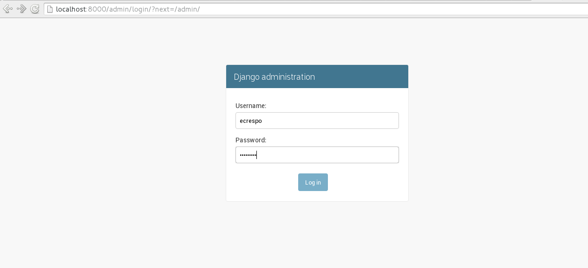
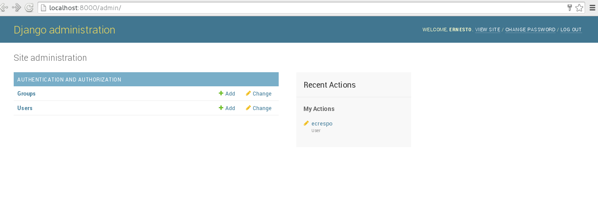
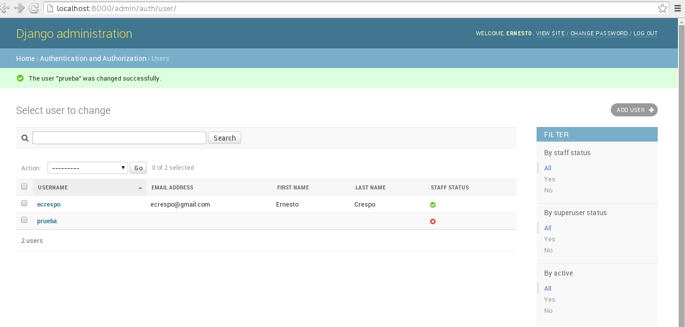
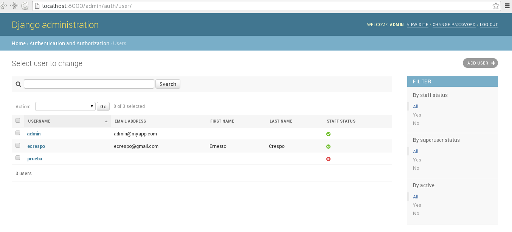

En el artículo anterior se tocó el tema de uso de un archivo Dockerfile para crear una imagen de docker que muestra una página estática por medio de apache.
En este artículo se usará el framework django para mostrar el funcionamiento del admin de Django desde Docker (artículos anteriores de Django).
A continuación los artículos anteriores:
- Instalar Docker en Debian Jessie
- Uso de Docker en Debian Jessie (parte 1)
- Uso de Docker en Debian Jessie (parte 2)
- Crear una imagen Docker con un archivo Dockerfile
En este caso se tiene creado un proyecto y una aplicación de Django con la siguientes directorios y archivos, se ha creado una cuenta de administrador (artículo de creación de proyecto y aplicación):
djangoapp
├── db.sqlite3
├── djangoapp
│ ├── __init__.py
│ ├── __init__.pyc
│ ├── settings.py
│ ├── settings.pyc
│ ├── urls.py
│ ├── urls.pyc
│ ├── wsgi.py
│ └── wsgi.pyc
└── manage.py
El archivo Dockerfile contiene lo siguiente:
FROM debian
MAINTAINER Ernesto Crespo <ecrespo@gmail.com>
RUN apt-get update
RUN apt-get install -y python-pip
RUN apt-get clean
RUN pip install virtualenv
RUN pip install django
RUN echo "America/Venezuela/Caracas" > /etc/timezone && dpkg-reconfigure -f noninteractive tzdata
# El puerto 8000 se publica en el contenedor
EXPOSE 8000
# Copiar aplicacion del subdirectorio djangoapp/ al directorio
# /djangoapp en el contenedor
ADD djangoapp /srv/djangoapp
COPY djangoapp /srv/djangoapp
RUN chown -R www-data:www-data /srv/djangoapp
RUN chmod a+x /srv/djangoapp/manage.py
# Establecer el directorio de trabajo
WORKDIR /srv/djangoapp
# Se lanza el servidor web del proyecto django
CMD python manage.py runserver 0.0.0.0:8000
- FROM debian: Se usa de base la última versión de Debian.
- MAINTAINER: Se define el nombre del mantenedor del contenedor.
- RUN: Se ejecuta la serie de comandos para instalar los paquetes necesarios, cambiar el huso horario del contenedor, cambiar de premisos y propietario de la carpeta donde estará el proyecto de django.
- EXPOSE 8000: Se publica el puerto 8000.
- ADD djangoapp /srv/djangoapp : Se copia el proyecto Django.
- COPY djangoapp /srv/djangoapp: Se copia el proyecto Django.
- WORKDIR /srv/djangoapp: Se define el directorio de trabajo.
- CMD python manage.py runserver 0.0.0.0:8000: Se ejecuta el servidor web del proyecto Django en el puerto 8000.
Al salvar el archivo se ejecuta la construcción de la imagen:
docker build -t myapp .
Al terminar de crear la imagen se tiene:
$ docker images
REPOSITORY TAG IMAGE ID CREATED VIRTUAL SIZE
myapp latest 948e276ee3d9 31 minutes ago 388.5 MB
ecrespo/empaquetadodebian latest ee5883957d64 3 weeks ago 656.9 MB
sameersbn/gitlab latest 5a4b34c1445c 5 weeks ago 675.8 MB
busybox latest fc0db02f3072 5 weeks ago 1.113 MB
debian latest 8b9a99209d5c 6 weeks ago 125.1 MB
sonarqube latest dd47274097f7 10 weeks ago 942.5 MB
hello-world latest 975b84d108f1 3 months ago 960 B
docker/whalesay latest fb434121fc77 7 months ago 247 MB
sonarqube 5.1 37c5c2e971dc 8 months ago 589 MB
Para ejecutar la instancia del docker myapp
docker run -p 8000:8000 myapp
Se asocia el puerto 8000 del equipo al puerto 8000 del docker myapp.
En la siguiente figura se tiene el inicio de sesión del admin de Django:

En la siguiente figura se muestra la administración de Django:

Se agrega un usuario al admin de Django:

Los procesos de docker son:

Se puede detener la instancia de docker el cual contenedor tiene el id 5fedc4d0615b.
$ docker stop 5fedc4d0615b
5fedc4d0615b
O iniciar la instancia
$ docker start 5fedc4d0615b
5fedc4d0615b
Crear otro usuario admin: Para ello en docker se puede ejecutar una consola interactiva con el siguiente comando:
$ docker exec -it determined_brattain /bin/bash
root@5fedc4d0615b:/srv/djangoapp#
root@5fedc4d0615b:/srv/djangoapp# python manage.py createsuperuser --username=admin --email=admin@myapp.com
Password:
Password (again):
Superuser created successfully.
Se sale de la consola y se prueba ingresar con el usuario admin.

Ya se puede ir personalizando una aplicación en la instancia de la imagen de docker que se ha creado.
¡Haz tu donativo! Si te gustó el artículo puedes realizar un donativo con Bitcoin (BTC) usando la billetera digital de tu preferencia a la siguiente dirección: 17MtNybhdkA9GV3UNS6BTwPcuhjXoPrSzV
O Escaneando el código QR desde la billetera:

Comments !